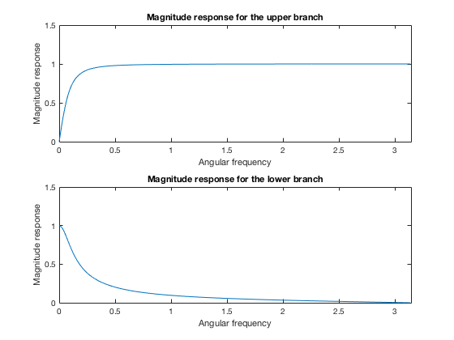
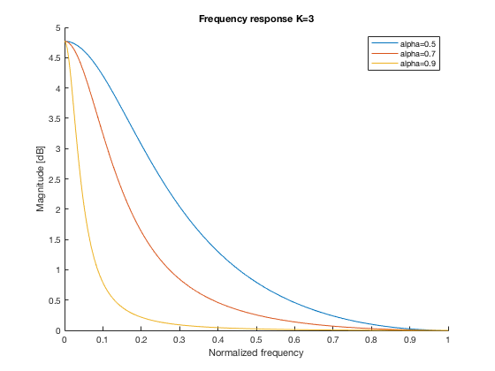
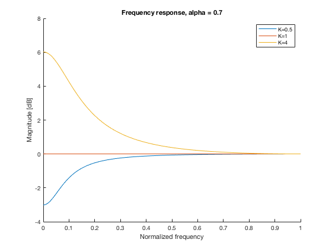

Contents
clc; clear; close all;
Problem 3
b)
poles = [2,-1.8]; zero_ub = [1.9,-1.9]; zero_lb = [0.1,0.1]; % Plot magnitude response of filters [h_ub,w] = freqz(zero_ub,poles); [h_lb,w] = freqz(zero_lb,poles); figure(1); subplot(2,1,1); plot(w,abs(h_ub)); axis([0,pi,0,1.5]); xlabel('Angular frequency'); ylabel('Magnitude response'); title('Magnitude response for the upper branch'); subplot(2,1,2); plot(w,abs(h_lb)); axis([0,pi,0,1.5]); xlabel('Angular frequency'); ylabel('Magnitude response'); title('Magnitude response for the lower branch');
Upper branch -> high pass Lower branch -> low pass
c)
Listen to original and modified Audio Sample
alpha=0.7; K=3; wavfile='Audio_Sample.wav'; [x,fs]=audioread(wavfile); % Plot magnitude response for different alpha figure(2); hold on; for alpha = [0.5 0.7 0.9]; B(1)= (K/2)*(1-alpha)+(1/2)*(1+alpha); B(2)= (K/2)*(1-alpha)-(1/2)*(1+alpha); A = [1, -alpha]; y = filter(B,A,x); [H,W]=freqz(B,A,1024); normFreq = [0:1/(length(H)-1):1]; plot(normFreq,10*log10(abs(real(H)))); title(['Frequency response',' K=',num2str(K)]); xlabel('Normalized frequency'); ylabel('Magnitude [dB]'); end; legend('alpha=0.5','alpha=0.7','alpha=0.9'); hold off; % Plot magnitude response for different K alpha=0.7; figure(3); hold on; for K = [0.5 1 4]; B(1)= (K/2)*(1-alpha)+(1/2)*(1+alpha); B(2)= (K/2)*(1-alpha)-(1/2)*(1+alpha); A = [1, -alpha]; y = filter(B,A,x); [H,W]=freqz(B,A,1024); normFreq = [0:1/(length(H)-1):1]; plot(normFreq,10*log10(abs(real(H)))); title('Frequency response, alpha = 0.7'); xlabel('Normalized frequency'); ylabel('Magnitude [dB]'); end; legend('K=0.5','K=1','K=4'); hold off; % K is the gain of the lower bra 